Table of Contents
10. Continuous Random Variables
10.1. The Normal Curve
10.1.1. Continuous Probability Distributions
10.1.2. The Uniform Distribution
10.1.3. The Exponential Distribution
10.1.4. The Normal Distribution
10.1.5. Graphing the Normal Distribution
10.1.6. The Standard Normal Curve
10.1.7. Finding the Area Under the Normal Curve
10.2. Normal Approximation
10.2.1. The Normal Approximation to the Binomial Distribution
10.2.2. The Scope of the Normal Approximation
10.2.3. Calculating a Normal Approximation
10.2.4. Change of Scale
10.3. Measurement Error
10.3.1. Bias
10.3.2. Chance Error
10.3.3. Outliers
10.4. Expected Value and Standard Error
10.4.1. Expected Value
10.4.2. Standard Error
10.5. Normal Approximation for Probability Histograms
10.5.1. Probability Histograms
10.5.2. Probability Histograms and the Normal Curve
10.5.3. Conclusion
10. Continuous Random Variables
10.1. The Normal Curve
10.1.1. Continuous Probability Distributions
A continuous probability distribution is a representation of a variable that can take a continuous range of values.
Learning Objective
Explain probability density function in continuous probability distribution
Key Points
- A probability density function is a function that describes the relative likelihood for a random variable to take on a given value.
- Intuitively, a continuous random variable is the one which can take a continuous range of values — as opposed to a discrete distribution, where the set of possible values for the random variable is at most countable.
- While for a discrete distribution an event with probability zero is impossible (e.g. rolling 3 and a half on a standard die is impossible, and has probability zero), this is not so in the case of a continuous random variable.
Key Term
- Lebesgue measure
- The unique complete translation-invariant measure for the
$\sigma$ -algebra which contains all$k$ -cells—in and which assigns a measure to each$k$ -cell equal to that$k$ -cell's volume (as defined in Euclidean geometry: i.e., the volume of the$k$ -cell equals the product of the lengths of its sides).
A continuous probability distribution is a probability distribution that has a probability density function. Mathematicians also call such a distribution "absolutely continuous," since its cumulative distribution function is absolutely continuous with respect to the Lebesgue measure $\lambda$ . If the distribution of $X$ is continuous, then $X$ is called a continuous random variable. There are many examples of continuous probability distributions: normal, uniform, chi-squared, and others.
Intuitively, a continuous random variable is the one which can take a continuous range of values—as opposed to a discrete distribution, in which the set of possible values for the random variable is at most countable. While for a discrete distribution an event with probability zero is impossible (e.g. rolling 3 and a half on a standard die is impossible, and has probability zero), this is not so in the case of a continuous random variable.
For example, if one measures the width of an oak leaf, the result of 3.5 cm is possible; however, it has probability zero because there are uncountably many other potential values even between 3 cm and 4 cm. Each of these individual outcomes has probability zero, yet the probability that the outcome will fall into the interval (3 cm, 4 cm) is nonzero. This apparent paradox is resolved given that the probability that $X$ attains some value within an infinite set, such as an interval, cannot be found by naively adding the probabilities for individual values. Formally, each value has an infinitesimally small probability, which statistically is equivalent to zero.
The definition states that a continuous probability distribution must possess a density; or equivalently, its cumulative distribution function be absolutely continuous. This requirement is stronger than simple continuity of the cumulative distribution function, and there is a special class of distributions—singular distributions, which are neither continuous nor discrete nor a mixture of those. An example is given by the Cantor distribution. Such singular distributions, however, are never encountered in practice.
Probability Density Functions
In theory, a probability density function is a function that describes the relative likelihood for a random variable to take on a given value. The probability for the random variable to fall within a particular region is given by the integral of this variable's density over the region. The probability density function is nonnegative everywhere, and its integral over the entire space is equal to one.
Unlike a probability, a probability density function can take on values greater than one. For example, the uniform distribution on the interval $\left[0, \frac{1}{2}\right]$ has probability density $f(x) = 2$ for $0 \leq x \leq \frac{1}{2}$ and $f(x) = 0$ elsewhere. The standard normal distribution has probability density function:
$\displaystyle f(x) = \frac{1}{\sqrt{2\pi}}e^{-\frac{1}{2}x^2}$ .

Boxplot and probability density function of a normal distribution $$$N(0, 2)$ .
10.1.2. The Uniform Distribution
The continuous uniform distribution is a family of symmetric probability distributions in which all intervals of the same length are equally probable.
Learning Objective
Contrast sampling from a uniform distribution and from an arbitrary distribution
Key Points
- The distribution is often abbreviated $U(a, b)$ , with $a$ and $b$ being the maximum and minimum values.
- The notation for the uniform distribution is: $X \sim U(a, b)$ where $a$ is the lowest value of $x$ and $b$ is the highest value of $x$ .
- If $u$ is a value sampled from the standard uniform distribution, then the value $a + (b-a)u$ follows the uniform distribution parametrized by $a$ and $b$ .
- The uniform distribution is useful for sampling from arbitrary distributions.
Key Terms
- cumulative distribution function
- The probability that a real-valued random variable
$X$ with a given probability distribution will be found at a value less than or equal to$x$ . - Box–Muller transformation
- A pseudo-random number sampling method for generating pairs of independent, standard, normally distributed (zero expectation, unit variance) random numbers, given a source of uniformly distributed random numbers.
- p-value
- The probability of obtaining a test statistic at least as extreme as the one that was actually observed, assuming that the null hypothesis is true.
The continuous uniform distribution, or rectangular distribution, is a family of symmetric probability distributions such that for each member of the family all intervals of the same length on the distribution's support are equally probable. The support is defined by the two parameters, $a$ and $b$ , which are its minimum and maximum values. The distribution is often abbreviated $U(a, b)$ . It is the maximum entropy probability distribution for a random variate $X$ under no constraint other than that it is contained in the distribution's support.
The probability that a uniformly distributed random variable falls within any interval of fixed length is independent of the location of the interval itself (but it is dependent on the interval size), so long as the interval is contained in the distribution's support.
To see this, if $X \sim U(a, b)$ and $[x, x+d]$ is a subinterval of $[a, b]$ with fixed $d>0$ , then, the formula shown:
Is independent of $x$ . This fact motivates the distribution's name.
Applications of the Uniform Distribution
When a $p$ -value is used as a test statistic for a simple null hypothesis, and the distribution of the test statistic is continuous, then the $p$ -value is uniformly distributed between 0 and 1 if the null hypothesis is true. The $p$ -value is the probability of obtaining a test statistic at least as extreme as the one that was actually observed, assuming that the null hypothesis is true. One often "rejects the null hypothesis" when the $p$ -value is less than the predetermined significance level, which is often 0.05 or 0.01, indicating that the observed result would be highly unlikely under the null hypothesis. Many common statistical tests, such as chi-squared tests or Student's $t$ -test, produce test statistics which can be interpreted using $p$ -values.
Sampling from a Uniform Distribution
There are many applications in which it is useful to run simulation experiments. Many programming languages have the ability to generate pseudo-random numbers which are effectively distributed according to the uniform distribution.
If $u$ is a value sampled from the standard uniform distribution, then the value $a+(b-a)u$ follows the uniform distribution parametrized by $a$ and $b$ .
Sampling from an Arbitrary Distribution
The uniform distribution is useful for sampling from arbitrary distributions. A general method is the inverse transform sampling method, which uses the cumulative distribution function (CDF) of the target random variable. This method is very useful in theoretical work. Since simulations using this method require inverting the CDF of the target variable, alternative methods have been devised for the cases where the CDF is not known in closed form. One such method is rejection sampling.
The normal distribution is an important example where the inverse transform method is not efficient. However, there is an exact method, the Box–Muller transformation, which uses the inverse transform to convert two independent uniform random variables into two independent normally distributed random variables.
Example
Imagine that the amount of time, in minutes, that a person must wait for a bus is uniformly distributed between 0 and 15 minutes. What is the probability that a person waits fewer than 12.5 minutes?
Let $X$ be the number of minutes a person must wait for a bus. $a=0$ and $b=15$ . $x \sim U(0, 15)$ . The probability density function is written as:
$f(x) = \frac{1}{15} - 0 = \frac{1}{15}$ for $0 \leq x \leq 15$
We want to find $P(x<12.5)$ .
The probability a person waits less than 12.5 minutes is 0.8333.
{kind=link}
The Uniform Distribution can be used to calculate probability problems such as the probability of waiting for a bus for a certain amount of time.
10.1.3. The Exponential Distribution
The exponential distribution is a family of continuous probability distributions that describe the time between events in a Poisson process.
Learning Objective
Apply exponential distribution in describing time for a continuous process
Key Points
- The exponential distribution is often concerned with the amount of time until some specific event occurs.
- Exponential variables can also be used to model situations where certain events occur with a constant probability per unit length, such as the distance between mutations on a DNA strand.
- Values for an exponential random variable occur in such a way that there are fewer large values and more small values.
- An important property of the exponential distribution is that it is memoryless.
Key Terms
- Erlang distribution
- The distribution of the sum of several independent exponentially distributed variables.
- Poisson process
- A stochastic process in which events occur continuously and independently of one another.
The exponential distribution is a family of continuous probability distributions. It describes the time between events in a Poisson process (the process in which events occur continuously and independently at a constant average rate).
The exponential distribution is often concerned with the amount of time until some specific event occurs. For example, the amount of time (beginning now) until an earthquake occurs has an exponential distribution. Other examples include the length (in minutes) of long distance business telephone calls and the amount of time (in months) that a car battery lasts. It could also be shown that the value of the coins in your pocket or purse follows (approximately) an exponential distribution.
Values for an exponential random variable occur in such a way that there are fewer large values and more small values. For example, the amount of money customers spend in one trip to the supermarket follows an exponential distribution. There are more people that spend less money and fewer people that spend large amounts of money.
Properties of the Exponential Distribution
The mean or expected value of an exponentially distributed random variable $X$, with rate parameter $\lambda$, is given by the formula:
Example: If you receive phone calls at an average rate of 2 per hour, you can expect to wait approximately thirty minutes for every call.
The variance of $X$ is given by the formula:
In our example, the rate at which you receive phone calls will have a variance of 15 minutes.
Another important property of the exponential distribution is that it is memoryless. This means that if a random variable $T$ is exponentially distributed, its conditional probability obeys the formula:
$P(T>s+t \ | \ T>s) = P(T>t)$ for all $s, t \geq 0$
The conditional probability that we need to wait, for example, more than another 10 seconds before the first arrival, given that the first arrival has not yet happened after 30 seconds, is equal to the initial probability that we need to wait more than 10 seconds for the first arrival. So, if we waited for 30 seconds and the first arrival didn't happen ($T>30$ ), the probability that we'll need to wait another 10 seconds for the first arrival ($T>(30+10)$ ) is the same as the initial probability that we need to wait more than 10 seconds for the first arrival ($T>10$ ). The fact that $P(T>40 \ | \ T>30) = P(T>10)$ does not mean that the events $T>40$ and $T>30$ are independent.
Applications of the Exponential Distribution
The exponential distribution describes the time for a continuous process to change state. In real-world scenarios, the assumption of a constant rate (or probability per unit time) is rarely satisfied. For example, the rate of incoming phone calls differs according to the time of day. But if we focus on a time interval during which the rate is roughly constant, such as from 2 to 4 p.m. during work days, the exponential distribution can be used as a good approximate model for the time until the next phone call arrives. Similar caveats apply to the following examples which yield approximately exponentially distributed variables:
- the time until a radioactive particle decays, or the time between clicks of a geiger counter
- the time until default (on payment to company debt holders) in reduced form credit risk modeling
Exponential variables can also be used to model situations where certain events occur with a constant probability per unit length, such as the distance between mutations on a DNA strand, or between roadkills on a given road.
In queuing theory, the service times of agents in a system (e.g. how long it takes for a bank teller to serve a customer) are often modeled as exponentially distributed variables. The length of a process that can be thought of as a sequence of several independent tasks is better modeled by a variable following the Erlang distribution (which is the distribution of the sum of several independent exponentially distributed variables).
Reliability engineering also makes extensive use of the exponential distribution. Because of the memoryless property of this distribution, it is well-suited to model the constant hazard rate portion of the bathtub curve used in reliability theory. It is also very convenient because it is so easy to add failure rates in a reliability model. The exponential distribution is, however, not appropriate to model the overall lifetime of organisms or technical devices because the "failure rates" here are not constant: more failures occur for very young and for very old systems.
In hydrology, the exponential distribution is used to analyze extreme values of such variables as monthly and annual maximum values of daily rainfall and river discharge volumes.
10.1.4. The Normal Distribution
The normal distribution is symmetric with scores more concentrated in the middle than in the tails.
Learning Objective
Recognize the normal distribution from its characteristics
Key Points
- Physical quantities that are expected to be the sum of many independent processes (such as measurement errors) often have a distribution very close to normal.
- The simplest case of normal distribution, known as the Standard Normal Distribution, has expected value zero and variance one.
- If the mean and standard deviation are known, then one essentially knows as much as if he or she had access to every point in the data set.
- The empirical rule is a handy quick estimate of the spread of the data given the mean and standard deviation of a data set that follows normal distribution.
- The normal distribution is the most used statistical distribution, since normality arises naturally in many physical, biological, and social measurement situations.
Key Terms
- empirical rule
- That a normal distribution has 68% of its observations within one standard deviation of the mean, 95% within two, and 99.7% within three.
- entropy
- A measure which quantifies the expected value of the information contained in a message.
- cumulant
- Any of a set of parameters of a one-dimensional probability distribution of a certain form.
Normal distributions are a family of distributions all having the same general shape. They are symmetric, with scores more concentrated in the middle than in the tails. Normal distributions are sometimes described as bell shaped.
The normal distribution is a continuous probability distribution, defined by the formula:
The parameter $\mu$ in this formula is the mean or expectation of the distribution (and also its median and mode). The parameter $\sigma$ is its standard deviation; its variance is therefore $\sigma^2$ . If $\mu = 0$ and $\sigma = 1$ , the distribution is called the standard normal distribution or the unit normal distribution, and a random variable with that distribution is a standard normal deviate.
Normal distributions are extremely important in statistics, and are often used in the natural and social sciences for real-valued random variables whose distributions are not known. One reason for their popularity is the central limit theorem, which states that (under mild conditions) the mean of a large number of random variables independently drawn from the same distribution is distributed approximately normally, irrespective of the form of the original distribution. Thus, physical quantities expected to be the sum of many independent processes (such as measurement errors) often have a distribution very close to normal. Another reason is that a large number of results and methods can be derived analytically, in explicit form, when the relevant variables are normally distributed.
The normal distribution is the only absolutely continuous distribution whose cumulants, other than the mean and variance, are all zero. It is also the continuous distribution with the maximum entropy for a given mean and variance.
Standard Normal Distribution
The simplest case of normal distribution, known as the Standard Normal Distribution, has expected value zero and variance one. This is written as N (0, 1), and is described by this probability density function:
The $\frac { 1 }{ \sqrt { 2\pi } }$ factor in this expression ensures that the total area under the curve $\phi(x)$ is equal to one. The $\frac{1}{2}$ in the exponent ensures that the distribution has unit variance (and therefore also unit standard deviation). This function is symmetric around $x=0$ , where it attains its maximum value $\frac { 1 }{ \sqrt { 2\pi } }$ ; and has inflection points at $+1$ and $-1$ .
Characteristics of the Normal Distribution
- It is a continuous distribution.
- It is symmetrical about the mean. Each half of the distribution is a mirror image of the other half.
- It is asymptotic to the horizontal axis.
- It is unimodal.
- The area under the curve is 1.
The normal distribution carries with it assumptions and can be completely specified by two parameters: the mean and the standard deviation. This is written as $N(0, 1)$ . If the mean and standard deviation are known, then one essentially knows as much as if he or she had access to every point in the data set.
The empirical rule is a handy quick estimate of the spread of the data given the mean and standard deviation of a data set that follows normal distribution. It states that:
- 68% of the data will fall within 1 standard deviation of the mean.
- 95% of the data will fall within 2 standard deviations of the mean.
- Almost all (99.7% ) of the data will fall within 3 standard deviations of the mean.
The strengths of the normal distribution are that:
- it is probably the most widely known and used of all distributions,
- it has infinitely divisible probability distributions, and
- it has strictly stable probability distributions.
The weakness of normal distributions is for reliability calculations. In this case, using the normal distribution starts at negative infinity. This case is able to result in negative values for some of the results.
Importance and Application
- Many things are normally distributed, or very close to it. For example, height and intelligence are approximately normally distributed.
- The normal distribution is easy to work with mathematically. In many practical cases, the methods developed using normal theory work quite well even when the distribution is not normal.
- There is a very strong connection between the size of a sample $N$ and the extent to which a sampling distribution approaches the normal form. Many sampling distributions based on a large $N$ can be approximated by the normal distribution even though the population distribution itself is not normal.
- The normal distribution is the most used statistical distribution, since normality arises naturally in many physical, biological, and social measurement situations.
In addition, normality is important in statistical inference. The normal distribution has applications in many areas of business administration. For example:
- Modern portfolio theory commonly assumes that the returns of a diversified asset portfolio follow a normal distribution.
- In human resource management, employee performance sometimes is considered to be normally distributed.
10.1.5. Graphing the Normal Distribution
The graph of a normal distribution is a bell curve.
Learning Objective
Evaluate a bell curve in order to picture the value of the standard deviation in a distribution
Key Points
- The mean of a normal distribution determines the height of a bell curve.
- The standard deviation of a normal distribution determines the width or spread of a bell curve.
- The larger the standard deviation, the wider the graph.
- Percentiles represent the area under the normal curve, increasing from left to right.
Key Terms
- empirical rule
- That a normal distribution has 68% of its observations within one standard deviation of the mean, 95% within two, and 99.7% within three.
- bell curve
- In mathematics, the bell-shaped curve that is typical of the normal distribution.
- real number
- An element of the set of real numbers; the set of real numbers include the rational numbers and the irrational numbers, but not all complex numbers.
The graph of a normal distribution is a bell curve, as shown below.
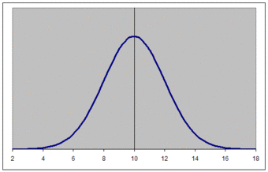{kind=link}
The graph of a normal distribution is known as a bell curve.
The properties of the bell curve are as follows.
- It is perfectly symmetrical.
- It is unimodal (has a single mode).
- Its domain is all real numbers.
- The area under the curve is 1.
Different values of the mean and standard deviation determine the density factor. Mean specifically determines the height of a bell curve, and standard deviation relates to the width or spread of the graph. The height of the graph at any $x$ value can be found through the equation:
In order to picture the value of the standard deviation of a normal distribution and it's relation to the width or spread of a bell curve, consider the following graphs. Out of these two graphs, graph 1 and graph 2, which one represents a set of data with a larger standard deviation?
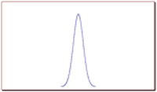{kind=link}
Bell curve visualizing a normal distribution with a relatively small standard deviation.
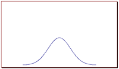{kind=link}
Bell curve visualizing a normal distribution with a relatively large standard deviation.
The correct answer is graph 2. The larger the standard deviation, the wider the graph. The smaller it is, the narrower the graph.
Percentiles and the Normal Curve
Percentiles represent the area under the normal curve, increasing from left to right. Each standard deviation represents a fixed percentile, and follows the empirical rule. Thus, rounding to two decimal places, $-3$ is the 0.13th percentile, $-2$ the 2.28th percentile, $-1$ the 15.87th percentile, 0 the 50th percentile (both the mean and median of the distribution), $+1$ the 84.13th percentile, $+2$ the 97.72nd percentile, and $+3$ the 99.87th percentile. Note that the 0th percentile falls at negative infinity and the 100th percentile at positive infinity.
10.1.6. The Standard Normal Curve
The standard normal distribution is a normal distribution with a mean of 0 and a standard deviation of 1.
Learning Objective
Explain how to derive standard normal distribution given a data set
Key Points
- The random variable of a standard normal distribution is denoted by $Z$ , instead of $X$ .
- Unfortunately, in most cases in which the normal distribution plays a role, the mean is not 0 and the standard deviation is not 1.
- Fortunately, one can transform any normal distribution with a certain mean $\mu$ and standard deviation $\sigma$ into a standard normal distribution, by the $z$ -score conversion formula.
- Of importance is that calculating $z$ requires the population mean and the population standard deviation, not the sample mean or sample deviation.
Key Terms
- z-score
- The standardized value of observation
$x$ from a distribution that has mean$\mu$ and standard deviation$\sigma$ . - standard normal distribution
- The normal distribution with a mean of zero and a standard deviation of one.
If the mean ($\mu$ ) and standard deviation ($\sigma$ ) of a normal distribution are 0 and 1, respectively, then we say that the random variable follows a standard normal distribution. This type of random variable is often denoted by $Z$ , instead of $X$ .
The area above the $x$ -axis and under the curve must equal one, with the area under the curve representing the probability. For example, $P(-2<X<2)$ is the area under the curve between $x=-2$ and $x=2$ . Since the standard deviation is 1, this represents the probability that a normal distribution is between 2 standard deviations away from the mean. From the empirical rule, we know that this value is 0.95.
Standardization
Unfortunately, in most cases in which the normal distribution plays a role, the mean is not 0 and the standard deviation is not 1. Luckily, one can transform any normal distribution with a certain mean $\mu$ and standard deviation $\sigma$ into a standard normal distribution, by the $z$ -score conversion formula:
Therefore, a $z$ -score is the standardized value of observation $x$ from a distribution that has mean $\mu$ and standard deviation $\sigma$ (how many standard deviations you are away from zero). The $z$ -score gets its name because of the denomination of the standard normal distribution as the "$Z$ " distribution. It can be said to provide an assessment of how off-target a process is operating.
A key point is that calculating $z$ requires the population mean and the population standard deviation, not the sample mean or sample deviation. It requires knowing the population parameters, not the statistics of a sample drawn from the population of interest. However, knowing the true standard deviation of a population is often unrealistic except in cases such as standardized testing, where the entire population is measured. In cases where it is impossible to measure every member of a population, the standard deviation may be estimated using a random sample.
Example
Assuming that the height of women in the US is normally distributed with a mean of 64 inches and a standard deviation of 2.5 inches, find the following:
- The probability that a randomly selected woman is taller than 70.4 inches (5 foot 10.4 inches).
- The probability that a randomly selected woman is between 60.3 and 65 inches tall.
Part one: Since the height of women follows a normal distribution but not a standard normal, we first need to standardize. Since $x=70.4 \ \text{inches}$ , $\mu=64 \ \text{inches}$ and $\sigma = 2.5 \ \text{inches}$ , we need to calculate $z$ :
Therefore, the probability $P(X>70.4)$ is equal to $P(Z>2.56)$ , where $X$ is the normally distributed height with mean $\mu=64 \ \text{inches}$ and standard deviation $\sigma = 2.5 \ \text{inches}$ ($\{X \sim N(64, 2.5)\}$ , for short), and $Z$ is a standard normal distribution $\{Z \sim N(0, 1)\}$ .
The next step requires that we use what is known as the $z$ -score table to calculate probabilities for the standard normal distribution. This table can be seen below.
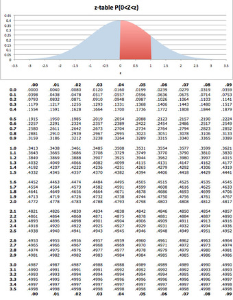{kind=link}
The $z$ -score table is used to calculate probabilities for the standard normal distribution.
From the table, we learn that:
Part two: For the second problem we have two values of $x$ to standarize: $x_1 = 60.3$ and $x_2 = 65$ . Standardizing these values we obtain:
$z_1 = -1.48$ and $z_2 = 0.40$ .
Notice that the first value is negative, which means that it is below the mean. Therefore:
10.1.7. Finding the Area Under the Normal Curve
To calculate the probability that a variable is within a range in the normal distribution, we have to find the area under the normal curve.
Learning Objective
Interpret a
Key Points
- To calculate the area under a normal curve, we use a $z$ -score table.
- In a $z$ -score table, the left most column tells you how many standard deviations above the the mean to 1 decimal place, the top row gives the second decimal place, and the intersection of a row and column gives the probability.
- For example, if we want to know the probability that a variable is no more than 0.51 standard deviations above the mean, we find select the 6th row down (corresponding to 0.5) and the 2nd column (corresponding to 0.01).
Key Term
- z-score
- The standardized value of observation
$x$ from a distribution that has mean$\mu$ and standard deviation$\sigma$ .
To calculate the probability that a variable is within a range in the normal distribution, we have to find the area under the normal curve. In order to do this, we use a $z$ -score table. (Same as in the process of standardization discussed in the previous section).
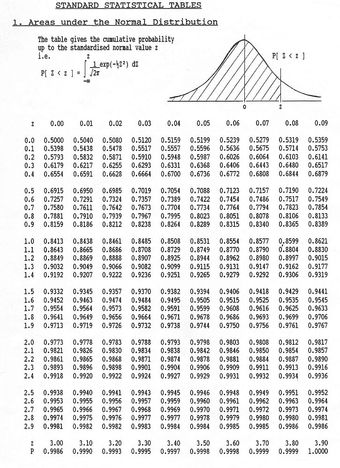{kind=link}
This table gives the cumulative probability up to the standardized normal value $z$ .
These tables can seem a bit daunting; however, the key is knowing how to read them.
- The left most column tells you how many standard deviations above the the mean to 1 decimal place.
- The top row gives the second decimal place.
- The intersection of a row and column gives the probability.
For example, if we want to know the probability that a variable is no more than 0.51 standard deviations above the mean, we find select the 6th row down (corresponding to 0.5) and the 2nd column (corresponding to 0.01). The intersection of the 6th row and 2nd column is 0.6950. This tells us that there is a 69.50% percent chance that a variable is less than 0.51 sigmas above the mean.
Notice that for 0.00 standard deviations, the probability is 0.5000. This shows us that there is equal probability of being above or below the mean.
Consider the following as a simple example: find $P(Z\leq 1.5)$.
This problem essentially asks what is the probability that a variable is less than 1.5 standard deviations above the mean. On the table of values, find the row that corresponds to 1.5 and the column that corresponds to 0.00. This gives us a probability of 0.933.
The following is another simple example: find $P(Z\geq 1.17)$.
This problem essentially asks what is the probability that a variable is MORE than 1.17 standard deviation above the mean. On the table of values, find the row that corresponds to 1.1 and the column that corresponds to 0.07. This gives us a probability of 0.8790. However, this is the probability that the value is less than 1.17 sigmas above the mean. Since all the probabilities must sum to 1:
As a final example: find $P(-1.16\leq Z\leq 1.32)$ .
This example is a bit tougher. The problem can be rewritten in the form below.
The difficulty arrises from the fact that our table of values does not allow us to directly calculate $P(Z\leq -1.16)$ . However, we can use the symmetry of the distribution, as follows:
So, we can say that:
10.2. Normal Approximation
10.2.1. The Normal Approximation to the Binomial Distribution
The process of using the normal curve to estimate the shape of the binomial distribution is known as normal approximation.
Learning Objective
Explain the origins of central limit theorem for binomial distributions
Key Points
- Originally, to solve a problem such as the chance of obtaining 60 heads in 100 coin flips, one had to compute the probability of 60 heads, then the probability of 61 heads, 62 heads, etc, and add up all these probabilities.
- Abraham de Moivre noted that when the number of events (coin flips) increased, the shape of the binomial distribution approached a very smooth curve.
- Therefore, de Moivre reasoned that if he could find a mathematical expression for this curve, he would be able to solve problems such as finding the probability of 60 or more heads out of 100 coin flips much more easily.
- This is exactly what he did, and the curve he discovered is now called the normal curve.
Key Terms
- normal approximation
- The process of using the normal curve to estimate the shape of the distribution of a data set.
- central limit theorem
- The theorem that states: If the sum of independent identically distributed random variables has a finite variance, then it will be (approximately) normally distributed.
The binomial distribution can be used to solve problems such as, "If a fair coin is flipped 100 times, what is the probability of getting 60 or more heads?" The probability of exactly $x$ heads out of $N$ flips is computed using the formula:
where $x$ is the number of heads (60), $N$ is the number of flips (100), and $\pi$ is the probability of a head (0.5). Therefore, to solve this problem, you compute the probability of 60 heads, then the probability of 61 heads, 62 heads, etc, and add up all these probabilities.
Abraham de Moivre, an 18th century statistician and consultant to gamblers, was often called upon to make these lengthy computations. de Moivre noted that when the number of events (coin flips) increased, the shape of the binomial distribution approached a very smooth curve. Therefore, de Moivre reasoned that if he could find a mathematical expression for this curve, he would be able to solve problems such as finding the probability of 60 or more heads out of 100 coin flips much more easily. This is exactly what he did, and the curve he discovered is now called the normal curve. The process of using this curve to estimate the shape of the binomial distribution is known as normal approximation.
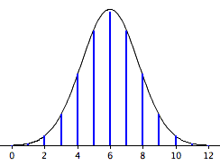{kind=link}
The normal approximation to the binomial distribution for 12 coin flips. The smooth curve is the normal distribution. Note how well it approximates the binomial probabilities represented by the heights of the blue lines.
The importance of the normal curve stems primarily from the fact that the distribution of many natural phenomena are at least approximately normally distributed. One of the first applications of the normal distribution was to the analysis of errors of measurement made in astronomical observations, errors that occurred because of imperfect instruments and imperfect observers. Galileo in the 17th century noted that these errors were symmetric and that small errors occurred more frequently than large errors. This led to several hypothesized distributions of errors, but it was not until the early 19th century that it was discovered that these errors followed a normal distribution. Independently the mathematicians Adrian (in 1808) and Gauss (in 1809) developed the formula for the normal distribution and showed that errors were fit well by this distribution.
This same distribution had been discovered by Laplace in 1778—when he derived the extremely important central limit theorem. Laplace showed that even if a distribution is not normally distributed, the means of repeated samples from the distribution would be very nearly normal, and that the the larger the sample size, the closer the distribution would be to a normal distribution. Most statistical procedures for testing differences between means assume normal distributions. Because the distribution of means is very close to normal, these tests work well even if the distribution itself is only roughly normal.
10.2.2. The Scope of the Normal Approximation
The scope of the normal approximation is dependent upon our sample size, becoming more accurate as the sample size grows.
Learning Objective
Explain how central limit theorem is applied in normal approximation
Key Points
- The tool of normal approximation allows us to approximate the probabilities of random variables for which we don't know all of the values, or for a very large range of potential values that would be very difficult and time consuming to calculate.
- The scope of the normal approximation follows with the statistical themes of the law of large numbers and central limit theorem.
- According to the law of large numbers, the average of the results obtained from a large number of trials should be close to the expected value, and will tend to become closer as more trials are performed.
- The central limit theorem (CLT) states that, given certain conditions, the mean of a sufficiently large number of independent random variables, each with a well-defined mean and well-defined variance, will be approximately normally distributed.
Key Terms
- law of large numbers
- The statistical tendency toward a fixed ratio in the results when an experiment is repeated a large number of times.
- central limit theorem
- The theorem that states: If the sum of independent identically distributed random variables has a finite variance, then it will be (approximately) normally distributed.
- normal approximation
- The process of using the normal curve to estimate the shape of the distribution of a data set.
The tool of normal approximation allows us to approximate the probabilities of random variables for which we don't know all of the values, or for a very large range of potential values that would be very difficult and time consuming to calculate. We do this by converting the range of values into standardized units and finding the area under the normal curve. A problem arises when there are a limited number of samples, or draws in the case of data "drawn from a box." A probability histogram of such a set may not resemble the normal curve, and therefore the normal curve will not accurately represent the expected values of the random variables. In other words, the scope of the normal approximation is dependent upon our sample size, becoming more accurate as the sample size grows. This characteristic follows with the statistical themes of the law of large numbers and central limit theorem (reviewed below).
Law of Large Numbers
The law of large numbers (LLN) is a theorem that describes the result of performing the same experiment a large number of times. According to the law, the average of the results obtained from a large number of trials should be close to the expected value, and will tend to become closer as more trials are performed.
The law of large numbers is important because it "guarantees" stable long-term results for the averages of random events. For example, while a casino may lose money in a single spin of the roulette wheel, its earnings will tend towards a predictable percentage over a large number of spins. Any winning streak by a player will eventually be overcome by the parameters of the game. It is important to remember that the LLN only applies (as the name indicates) when a large number of observations are considered. There is no principle that a small number of observations will coincide with the expected value or that a streak of one value will immediately be "balanced" by the others.
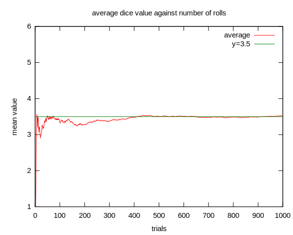{kind=link}
An illustration of the law of large numbers using a particular run of rolls of a single die. As the number of rolls in this run increases, the average of the values of all the results approaches 3.5. While different runs would show a different shape over a small number of throws (at the left), over a large number of rolls (to the right) they would be extremely similar.
Central Limit Theorem
The central limit theorem (CLT) states that, given certain conditions, the mean of a sufficiently large number of independent random variables, each with a well-defined mean and well-defined variance, will be approximately normally distributed. The central limit theorem has a number of variants. In its common form, the random variables must be identically distributed. In variants, convergence of the mean to the normal distribution also occurs for non-identical distributions, given that they comply with certain conditions.
More precisely, the central limit theorem states that as $n$ gets larger, the distribution of the difference between the sample average $S_n$ and its limit $\mu$ , when multiplied by the factor:
$\sqrt { n }$ (that is $\sqrt { n } ({ S }_{ n }-\mu )$ )
Approximates the normal distribution with mean 0 and variance $\sigma^2$ . For large enough $n$ , the distribution of $S_n$ is close to the normal distribution with mean $\mu$ and variance $\frac { { \sigma }^{ 2 } }{ n }$ . The usefulness of the theorem is that the distribution of $\sqrt { n } ({ S }_{ n }-\mu )$ approaches normality regardless of the shape of the distribution of the individual $X_i$ 's .
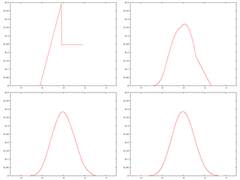{kind=link}
A distribution being "smoothed out" by summation, showing original density of distribution and three subsequent summations
10.2.3. Calculating a Normal Approximation
In this atom, we provide an example on how to compute a normal approximation for a binomial distribution.
Learning Objective
Demonstrate how to compute normal approximation for a binomial distribution
Key Points
- In our example, we have a fair coin and wish to know the probability that you would get 8 heads out of 10 flips.
- The binomial distribution has a mean of $\mu = Np = 10\cdot 0.5 = 5$ and a variance of $\sigma^2 = Np(1-p) = 10 \cdot 0.5\cdot 0.5 = 2.5$ ; therefore a standard deviation of 1.5811.
- A total of 8 heads is 1.8973 standard deviations above the mean of the distribution.
- Because the binomial distribution is discrete an the normal distribution is continuous, we round off and consider any value from 7.5 to 8.5 to represent an outcome of 8 heads.
- Using this approach, we calculate the area under a normal curve (which will be the binomial probability) from 7.5 to 8.5 to be 0.044.
Key Terms
- binomial distribution
- the discrete probability distribution of the number of successes in a sequence of
$n$ independent yes/no experiments, each of which yields success with probability$p$ - z-score
- The standardized value of observation
$x$ from a distribution that has mean$\mu$ and standard deviation$\sigma$ .
The following is an example on how to compute a normal approximation for a binomial distribution.
Assume you have a fair coin and wish to know the probability that you would get 8 heads out of 10 flips. The binomial distribution has a mean of $\mu = Np = 10\cdot 0.5 = 5$ and a variance of $\sigma^2 = Np(1-p) = 10 \cdot 0.5\cdot 0.5 = 2.5$ . The standard deviation is, therefore, 1.5811. A total of 8 heads is:
Standard deviations above the mean of the distribution. The question then is, "What is the probability of getting a value exactly 1.8973 standard deviations above the mean?" You may be surprised to learn that the answer is 0 (the probability of any one specific point is 0). The problem is that the binomial distribution is a discrete probablility distribution whereas the normal distribultion is a continuous distribution.
The solution is to round off and consider any value from 7.5 to 8.5 to represent an outcome of 8 heads. Using this approach, we calculate the area under a normal curve from 7.5 to 8.5. The area in green in the figure is an approximation of the probability of obtaining 8 heads.
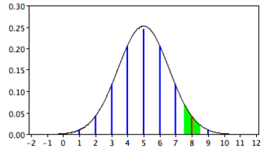{kind=link}
Approximation for the probability of 8 heads with the normal distribution.
To calculate this area, first we compute the area below 8.5 and then subtract the area below 7.5. This can be done by finding $z$ -scores and using the $z$ -score table. Here, for the sake of ease, we have used an online normal area calculator. The results are shown in the following figures:
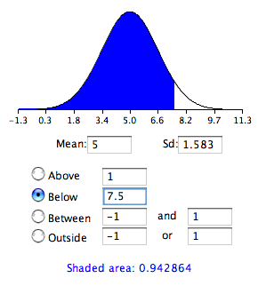{kind=link}
This graph shows the area below 7.5.
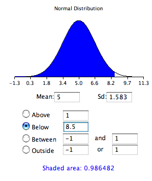{kind=link}
This graph shows the area below 8.5.
{kind=link}
The $z$ -score table is used to calculate probabilities for the standard normal distribution.
The differences between the areas is 0.044, which is the approximation of the binomial probability. For these parameters, the approximation is very accurate. If we did not have the normal area calculator, we could find the solution using a table of the standard normal distribution (a $z$ -table) as follows:
- Find a $Z$ score for 7.5 using the formula $Z=\frac { 7.5-5 }{ 1.5811 } =1.5811$
- Find the area below a $Z$ of $1.58=0.943$ .
- Find a $Z$ score for 8.5 using the formula $Z=\frac { 8.5-5 }{ 1.5811 } =2.21$
- Find the area below a $Z$ of $2.21=0.987$ .
- Subtract the value in step 2 from the value in step 4 to get 0.044.
The same logic applies when calculating the probability of a range of outcomes. For example, to calculate the probability of 8 to 10 flips, calculate the area from 7.5 to 10.5.
10.2.4. Change of Scale
In order to consider a normal distribution or normal approximation, a standard scale or standard units is necessary.
Learning Objective
Explain the significance of normalization of ratings and calculate this normalization
Key Points
- In the simplest cases, normalization of ratings means adjusting values measured on different scales to a notionally common scale, often prior to averaging.
- In more complicated cases, normalization may refer to more sophisticated adjustments where the intention is to bring the entire probability distributions of adjusted values into alignment.
- The standard score is a dimensionless quantity obtained by subtracting the population mean from an individual raw score and then dividing the difference by the population standard deviation.
- A key point is that calculating $z$ requires the population mean and the population standard deviation, not the sample mean or sample deviation.
Key Terms
- datum
- A measurement of something on a scale understood by both the recorder (a person or device) and the reader (another person or device).
- standard score
- The number of standard deviations an observation or datum is above the mean.
- normalization
- The process of removing statistical error in repeated measured data.
In order to consider a normal distribution or normal approximation, a standard scale or standard units is necessary.
Normalization
In the simplest cases, normalization of ratings means adjusting values measured on different scales to a notionally common scale, often prior to averaging. In more complicated cases, normalization may refer to more sophisticated adjustments where the intention is to bring the entire probability distributions of adjusted values into alignment. In the case of normalization of scores in educational assessment, there may be an intention to align distributions to a normal distribution. A different approach to normalization of probability distributions is quantile normalization, where the quantiles of the different measures are brought into alignment.
Normalization can also refer to the creation of shifted and scaled versions of statistics, where the intention is that these normalized values allow the comparison of corresponding normalized values for different datasets. Some types of normalization involve only a rescaling, to arrive at values relative to some size variable.
The Standard Score
The standard score is the number of standard deviations an observation or datum is above the mean. Thus, a positive standard score represents a datum above the mean, while a negative standard score represents a datum below the mean. It is a dimensionless quantity obtained by subtracting the population mean from an individual raw score and then dividing the difference by the population standard deviation. This conversion process is called standardizing or normalizing.
Standard scores are also called $z$ -values, $z$ -scores, normal scores, and standardized variables. The use of "$Z$ " is because the normal distribution is also known as the "$Z$ distribution". They are most frequently used to compare a sample to a standard normal deviate (standard normal distribution, with $\mu = 0$ and $\sigma = 1$ ).
The $z$ -score is only defined if one knows the population parameters. If one only has a sample set, then the analogous computation with sample mean and sample standard deviation yields the Student's $t$ -statistic.
The standard score of a raw score $x$ is:
Where $\mu$ is the mean of the population, and is the standard deviation of the population. The absolute value of $z$ represents the distance between the raw score and the population mean in units of the standard deviation. $z$ is negative when the raw score is below the mean, positive when above.
A key point is that calculating $z$ requires the population mean and the population standard deviation, not the sample mean or sample deviation. It requires knowing the population parameters, not the statistics of a sample drawn from the population of interest. However, knowing the true standard deviation of a population is often unrealistic except in cases such as standardized testing, where the entire population is measured. In cases where it is impossible to measure every member of a population, a random sample may be used.
The $Z$ value measures the sigma distance of actual data from the average and provides an assessment of how off-target a process is operating.
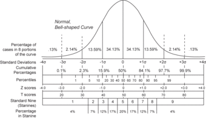{kind=link}
Compares the various grading methods in a normal distribution. Includes: standard deviations, cumulative percentages, percentile equivalents, $Z$ -scores, $T$ -scores, and standard nine.
10.3. Measurement Error
10.3.1. Bias
Systematic, or biased, errors are errors which consistently yield results either higher or lower than the correct measurement.
Learning Objective
Contrast random and systematic errors
Key Points
- Systematic errors are biases in measurement which lead to a situation wherein the mean of many separate measurements differs significantly from the actual value of the measured attribute in one direction.
- A systematic error makes the measured value always smaller or larger than the true value, but not both. An experiment may involve more than one systematic error and these errors may nullify one another, but each alters the true value in one way only.
- Accuracy (or validity) is a measure of the systematic error. If an experiment is accurate or valid, then the systematic error is very small.
- Systematic errors include personal errors, instrumental errors, and method errors.
Key Terms
- systematic error
- an error which consistently yields results either higher or lower than the correct measurement; accuracy error
- random error
- an error which is a combination of results both higher and lower than the desired measurement; precision error
- Accuracy
- the degree of closeness of measurements of a quantity to that quantity's actual (true) value
Two Types of Errors
While conducting measurements in experiments, there are generally two different types of errors: random (or chance) errors and systematic (or biased) errors.
Every measurement has an inherent uncertainty. We therefore need to give some indication of the reliability of measurements and the uncertainties of the results calculated from these measurements. To better understand the outcome of experimental data, an estimate of the size of the systematic errors compared to the random errors should be considered. Random errors are due to the precision of the equipment , and systematic errors are due to how well the equipment was used or how well the experiment was controlled .
{kind=link}
This target shows an example of low accuracy (points are not close to center target) but high precision (points are close together). In this case, there is more systematic error than random error.

This target shows an example of high accuracy (points are all close to center target) but low precision (points are not close together). In this case, there is more random error than systematic error.
Biased, or Systematic, Errors
Systematic errors are biases in measurement which lead to a situation wherein the mean of many separate measurements differs significantly from the actual value of the measured attribute. All measurements are prone to systematic errors, often of several different types. Sources of systematic errors may be imperfect calibration of measurement instruments, changes in the environment which interfere with the measurement process, and imperfect methods of observation.
A systematic error makes the measured value always smaller or larger than the true value, but not both. An experiment may involve more than one systematic error and these errors may nullify one another, but each alters the true value in one way only. Accuracy (or validity) is a measure of the systematic error. If an experiment is accurate or valid, then the systematic error is very small. Accuracy is a measure of how well an experiment measures what it was trying to measure. This is difficult to evaluate unless you have an idea of the expected value (e.g. a text book value or a calculated value from a data book). Compare your experimental value to the literature value. If it is within the margin of error for the random errors, then it is most likely that the systematic errors are smaller than the random errors. If it is larger, then you need to determine where the errors have occurred. When an accepted value is available for a result determined by experiment, the percent error can be calculated.
For example, consider an experimenter taking a reading of the time period of a pendulum's full swing. If their stop-watch or timer starts with 1 second on the clock, then all of their results will be off by 1 second. If the experimenter repeats this experiment twenty times (starting at 1 second each time), then there will be a percentage error in the calculated average of their results; the final result will be slightly larger than the true period.
Categories of Systematic Errors and How to Reduce Them
- Personal Errors: These errors are the result of ignorance, carelessness, prejudices, or physical limitations on the experimenter. This type of error can be greatly reduced if you are familiar with the experiment you are doing.
- Instrumental Errors: Instrumental errors are attributed to imperfections in the tools with which the analyst works. For example, volumetric equipment, such as burets, pipets, and volumetric flasks, frequently deliver or contain volumes slightly different from those indicated by their graduations. Calibration can eliminate this type of error.
- Method Errors: This type of error many times results when you do not consider how to control an experiment. For any experiment, ideally you should have only one manipulated (independent) variable. Many times this is very difficult to accomplish. The more variables you can control in an experiment, the fewer method errors you will have.
10.3.2. Chance Error
Random, or chance, errors are errors that are a combination of results both higher and lower than the desired measurement.
Learning Objective
Explain how random errors occur within an experiment
Key Points
- A random error makes the measured value both smaller and larger than the true value; they are errors of precision.
- Random errors occur by chance and cannot be avoided.
- Random error is due to factors which we do not, or cannot, control.
Key Terms
- systematic error
- an error which consistently yields results either higher or lower than the correct measurement; accuracy error
- random error
- an error which is a combination of results both higher and lower than the desired measurement; precision error
- Precision
- the ability of a measurement to be reproduced consistently
Two Types of Errors
While conducting measurements in experiments, there are generally two different types of errors: random (or chance) errors and systematic (or biased) errors.
Every measurement has an inherent uncertainty. We therefore need to give some indication of the reliability of measurements and the uncertainties of the results calculated from these measurements. To better understand the outcome of experimental data, an estimate of the size of the systematic errors compared to the random errors should be considered. Random errors are due to the precision of the equipment , and systematic errors are due to how well the equipment was used or how well the experiment was controlled .
{kind=link}
This target shows an example of low accuracy (points are not close to center target) but high precision (points are close together). In this case, there is more systematic error than random error.
{kind=link}
This target shows an example of high accuracy (points are all close to center target) but low precision (points are not close together). In this case, there is more random error than systematic error.
Chance, or Random Errors
A random error makes the measured value both smaller and larger than the true value; they are errors of precision. Chance alone determines if the value is smaller or larger. Reading the scales of a balance, graduated cylinder, thermometer, etc. produces random errors. In other words, you can weigh a dish on a balance and get a different answer each time simply due to random errors. They cannot be avoided; they are part of the measuring process. Uncertainties are measures of random errors. These are errors incurred as a result of making measurements on imperfect tools which can only have certain degree of precision.
Random error is due to factors which we cannot (or do not) control. It may be too expensive, or we may be too ignorant of these factors to control them each time we measure. It may even be that whatever we are trying to measure is changing in time or is fundamentally probabilistic. Random error often occurs when instruments are pushed to their limits. For example, it is common for digital balances to exhibit random error in their least significant digit. Three measurements of a single object might read something like 0.9111g, 0.9110g, and 0.9112g.
10.3.3. Outliers
In statistics, an outlier is an observation that is numerically distant from the rest of the data.
Learning Objective
Explain how to identify outliers in a distribution
Key Points
- Outliers can occur by chance, by human error, or by equipment malfunction. They may be indicative of a non-normal distribution, or they may just be natural deviations that occur in a large sample.
- Unless it can be ascertained that the deviation is not significant, it is not wise to ignore the presence of outliers.
- There is no rigid mathematical definition of what constitutes an outlier. Often, however, we use the rule of thumb that any point that is located further than two standard deviations above or below the best fit line is an outlier.
Key Terms
- interquartile range
- The difference between the first and third quartiles; a robust measure of sample dispersion.
- regression line
- A smooth curve fitted to the set of paired data in regression analysis; for linear regression the curve is a straight line.
- best fit line
- A line on a graph showing the general direction that a group of points seem to be heading.
- outlier
- a value in a statistical sample which does not fit a pattern that describes most other data points; specifically, a value that lies 1.5 IQR beyond the upper or lower quartile
Outliers
In statistics, an outlier is an observation that is numerically distant from the rest of the data. Outliers can occur by chance in any distribution, but they are often indicative either of measurement error or that the population has a heavy-tailed distribution. In the former case, one wishes to discard them or use statistics that are robust to outliers, while in the latter case, they indicate that the distribution is skewed and that one should be very cautious in using tools or intuitions that assume a normal distribution.
When looking at regression lines that show where the data points fall, outliers are far away from the best fit line. They have large "errors," where the "error" or residual is the vertical distance from the line to the point.
Outliers need to be examined closely. Sometimes, for some reason or another, they should not be included in the analysis of the data. It is possible that an outlier is a result of erroneous data. Other times, an outlier may hold valuable information about the population under study and should remain included in the data. The key is to carefully examine what causes a data point to be an outlier.
Identifying Outliers
We could guess at outliers by looking at a graph of the scatterplot and best fit line. However, we would like some guideline as to how far away a point needs to be in order to be considered an outlier. As a rough rule of thumb, we can flag any point that is located further than two standard deviations above or below the best fit line as an outlier, as illustrated below. The standard deviation used is the standard deviation of the residuals or errors.
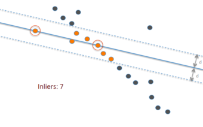{kind=link}
This graph shows a best-fit line (solid blue) to fit the data points, as well as two extra lines (dotted blue) that are two standard deviations above and below the best fit line. Highlighted in orange are all the points, sometimes called "inliers", that lie within this range; anything outside those lines—the dark-blue points—can be considered an outlier.
Note: There is no rigid mathematical definition of what constitutes an outlier; determining whether or not an observation is an outlier is ultimately a subjective exercise. The above rule is just one of many rules used. Another method often used is based on the interquartile range (IQR). For example, some people use the $1.5 \cdot \text{IQR}$ rule. This defines an outlier to be any observation that falls $1.5 \cdot \text{IQR}$ below the first quartile or any observation that falls $1.5 \cdot \text{IQR}$ above the third quartile.
If we are to use the standard deviation rule, we can do this visually in the scatterplot by drawing an extra pair of lines that are two standard deviations above and below the best fit line. Any data points that are outside this extra pair of lines are flagged as potential outliers. Or, we can do this numerically by calculating each residual and comparing it to twice the standard deviation. Graphing calculators make this process fairly simple.
Causes for Outliers
Outliers can have many anomalous causes. A physical apparatus for taking measurements may have suffered a transient malfunction. There may have been an error in data transmission or transcription. Outliers arise due to changes in system behavior, fraudulent behavior, human error, instrument error or simply through natural deviations in populations. A sample may have been contaminated with elements from outside the population being examined. Alternatively, an outlier could be the result of a flaw in the assumed theory, calling for further investigation by the researcher.
Unless it can be ascertained that the deviation is not significant, it is ill-advised to ignore the presence of outliers. Outliers that cannot be readily explained demand special attention.
10.4. Expected Value and Standard Error
10.4.1. Expected Value
The expected value is a weighted average of all possible values in a data set.
Learning Objective
Compute the expected value and explain its applications and relationship to the law of large numbers
Key Points
- The expected value refers, intuitively, to the value of a random variable one would "expect" to find if one could repeat the random variable process an infinite number of times and take the average of the values obtained.
- The intuitive explanation of the expected value above is a consequence of the law of large numbers: the expected value, when it exists, is almost surely the limit of the sample mean as the sample size grows to infinity.
- From a rigorous theoretical standpoint, the expected value of a continuous variable is the integral of the random variable with respect to its probability measure.
Key Terms
- weighted average
- an arithmetic mean of values biased according to agreed weightings
- integral
- the limit of the sums computed in a process in which the domain of a function is divided into small subsets and a possibly nominal value of the function on each subset is multiplied by the measure of that subset, all these products then being summed
- random variable
- a quantity whose value is random and to which a probability distribution is assigned, such as the possible outcome of a roll of a die
In probability theory, the expected value refers, intuitively, to the value of a random variable one would "expect" to find if one could repeat the random variable process an infinite number of times and take the average of the values obtained. More formally, the expected value is a weighted average of all possible values. In other words, each possible value the random variable can assume is multiplied by its assigned weight, and the resulting products are then added together to find the expected value.
The weights used in computing this average are the probabilities in the case of a discrete random variable (that is, a random variable that can only take on a finite number of values, such as a roll of a pair of dice), or the values of a probability density function in the case of a continuous random variable (that is, a random variable that can assume a theoretically infinite number of values, such as the height of a person).
From a rigorous theoretical standpoint, the expected value of a continuous variable is the integral of the random variable with respect to its probability measure. Since probability can never be negative (although it can be zero), one can intuitively understand this as the area under the curve of the graph of the values of a random variable multiplied by the probability of that value. Thus, for a continuous random variable the expected value is the limit of the weighted sum, i.e. the integral.
Simple Example
Suppose we have a random variable $X$ , which represents the number of girls in a family of three children. Without too much effort, you can compute the following probabilities:
The expected value of $X, E[X]$ , is computed as:
This calculation can be easily generalized to more complicated situations. Suppose that a rich uncle plans to give you \$2,000 for each child in your family, with a bonus of \$500 for each girl. The formula for the bonus is:
What is your expected bonus?
We could have calculated the same value by taking the expected number of children and plugging it into the equation:
Expected Value and the Law of Large Numbers
The intuitive explanation of the expected value above is a consequence of the law of large numbers: the expected value, when it exists, is almost surely the limit of the sample mean as the sample size grows to infinity. More informally, it can be interpreted as the long-run average of the results of many independent repetitions of an experiment (e.g. a dice roll). The value may not be expected in the ordinary sense—the "expected value" itself may be unlikely or even impossible (such as having 2.5 children), as is also the case with the sample mean.
Uses and Applications
To empirically estimate the expected value of a random variable, one repeatedly measures observations of the variable and computes the arithmetic mean of the results. If the expected value exists, this procedure estimates the true expected value in an unbiased manner and has the property of minimizing the sum of the squares of the residuals (the sum of the squared differences between the observations and the estimate). The law of large numbers demonstrates (under fairly mild conditions) that, as the size of the sample gets larger, the variance of this estimate gets smaller.
This property is often exploited in a wide variety of applications, including general problems of statistical estimation and machine learning, to estimate (probabilistic) quantities of interest via Monte Carlo methods.
The expected value plays important roles in a variety of contexts. In regression analysis, one desires a formula in terms of observed data that will give a "good" estimate of the parameter giving the effect of some explanatory variable upon a dependent variable. The formula will give different estimates using different samples of data, so the estimate it gives is itself a random variable. A formula is typically considered good in this context if it is an unbiased estimator—that is, if the expected value of the estimate (the average value it would give over an arbitrarily large number of separate samples) can be shown to equal the true value of the desired parameter.
In decision theory, and in particular in choice under uncertainty, an agent is described as making an optimal choice in the context of incomplete information. For risk neutral agents, the choice involves using the expected values of uncertain quantities, while for risk averse agents it involves maximizing the expected value of some objective function such as a von Neumann-Morgenstern utility function.
10.4.2. Standard Error
The standard error is the standard deviation of the sampling distribution of a statistic.
Learning Objective
Paraphrase standard error, standard error of the mean, standard error correction and relative standard error.
Key Points
- The standard error of the mean (SEM) is the standard deviation of the sample-mean's estimate of a population mean.
- SEM is usually estimated by the sample estimate of the population standard deviation (sample standard deviation) divided by the square root of the sample size.
- The standard error and the standard deviation of small samples tend to systematically underestimate the population standard error and deviations.
- When the sampling fraction is large (approximately at 5% or more), the estimate of the error must be corrected by multiplying by a "finite population correction" to account for the added precision gained by sampling close to a larger percentage of the population.
- If values of the measured quantity $A$ are not statistically independent, an unbiased estimate of the true standard error of the mean may be obtained by multiplying the calculated standard error of the sample by the factor $f$ .
- The relative standard error (RSE) is simply the standard error divided by the mean and expressed as a percentage.
Key Terms
- correlation
- One of the several measures of the linear statistical relationship between two random variables, indicating both the strength and direction of the relationship.
- regression
- An analytic method to measure the association of one or more independent variables with a dependent variable.
Quite simply, the standard error is the standard deviation of the sampling distribution of a statistic. The term may also be used to refer to an estimate of that standard deviation, derived from a particular sample used to compute the estimate. For example, the sample mean is the usual estimator of a population mean. However, different samples drawn from that same population would in general have different values of the sample mean. The standard error of the mean (i.e., of using the sample mean as a method of estimating the population mean) is the standard deviation of those sample means over all possible samples (of a given size) drawn from the population. Secondly, the standard error of the mean can refer to an estimate of that standard deviation, computed from the sample of data being analyzed at the time.
In regression analysis, the term "standard error" is also used in the phrase standard error of the regression to mean the ordinary least squares estimate of the standard deviation of the underlying errors.
Standard Error of the Mean
As mentioned, the standard error of the mean (SEM) is the standard deviation of the sample-mean's estimate of a population mean. It can also be viewed as the standard deviation of the error in the sample mean relative to the true mean, since the sample mean is an unbiased estimator. SEM is usually estimated by the sample estimate of the population standard deviation (sample standard deviation) divided by the square root of the sample size (assuming statistical independence of the values in the sample):
where:
- $s$ is the sample standard deviation (i.e., the sample-based estimate of the standard deviation of the population), and
- $n$ is the size (number of observations) of the sample.
This estimate may be compared with the formula for the true standard deviation of the sample mean:
The standard error and the standard deviation of small samples tend to systematically underestimate the population standard error and deviations. This is due to the fact that the standard error of the mean is a biased estimator of the population standard error. Decreasing the uncertainty in a mean value estimate by a factor of two requires acquiring four times as many observations in the sample. Or decreasing standard error by a factor of ten requires a hundred times as many observations.
Standard Error Versus Standard Deviation
The standard error and standard deviation are often considered interchangeable. However, while the mean and standard deviation are descriptive statistics, the mean and standard error describe bounds on a random sampling process. Despite the small difference in equations for the standard deviation and the standard error, this small difference changes the meaning of what is being reported from a description of the variation in measurements to a probabilistic statement about how the number of samples will provide a better bound on estimates of the population mean. Put simply, standard error is an estimate of how close to the population mean your sample mean is likely to be, whereas standard deviation is the degree to which individuals within the sample differ from the sample mean.
Correction for Finite Population
The formula given above for the standard error assumes that the sample size is much smaller than the population size, so that the population can be considered to be effectively infinite in size. When the sampling fraction is large (approximately at 5% or more), the estimate of the error must be corrected by multiplying by a "finite population correction" to account for the added precision gained by sampling close to a larger percentage of the population. The formula for the FPC is as follows:
The effect of the FPC is that the error becomes zero when the sample size $n$ is equal to the population size $N$ .
Correction for Correlation In the Sample
If values of the measured quantity $A$ are not statistically independent but have been obtained from known locations in parameter space $x$ , an unbiased estimate of the true standard error of the mean may be obtained by multiplying the calculated standard error of the sample by the factor $f$ :
where the sample bias coefficient $\rho$ is the widely used Prais-Winsten estimate of the autocorrelation-coefficient (a quantity between $-1$ and $1$ ) for all sample point pairs. This approximate formula is for moderate to large sample sizes and works for positive and negative $\rho$ alike.
Relative Standard Error
The relative standard error (RSE) is simply the standard error divided by the mean and expressed as a percentage. For example, consider two surveys of household income that both result in a sample mean of \$50,000. If one survey has a standard error of \$10,000 and the other has a standard error of \$5,000, then the relative standard errors are 20% and 10% respectively. The survey with the lower relative standard error has a more precise measurement since there is less variance around the mean. In fact, data organizations often set reliability standards that their data must reach before publication. For example, the U.S. National Center for Health Statistics typically does not report an estimate if the relative standard error exceeds 30%.
10.5. Normal Approximation for Probability Histograms
10.5.1. Probability Histograms
A probability histogram is a graph that shows the probability of each outcome on the $y$ -axis.
Learning Objective
Explain the significance of a histogram as a graphical representation of data distribution
Key Points
- In a probability histogram, the height of each bar showsthe true probability of each outcome if there were to be a very large number of trials (not the actual relative frequencies determined by actually conducting an experiment).
- By looking at a probability histogram, one can visually see if it follows a certain distribution, such as the normal distribution.
- As in all probability distributions, the probabilities of all the outcomes must add up to one.
Key Terms
- independent
- not dependent; not contingent or depending on something else; free
- discrete random variable
- obtained by counting values for which there are no in-between values, such as the integers 0, 1, 2, ….
Histograms
When examining data, it is often best to create a graphical representation of the distribution. Visual graphs, such as histograms, help one to easily see a few very important characteristics about the data, such as its overall pattern, striking deviations from that pattern, and its shape, center, and spread.
A histogram is particularly useful when there is a large number of observations. Histograms break the range of values in classes, and display only the count or percent of the observations that fall into each class. Regular histograms have a $y$ -axis that is labeled with frequency. Relative frequency histograms instead have relative frequencies on the $y$ -axis, with data taken from a real experiment. This chapter will focus specifically on probability histograms, which is an idealization of the relative frequency distribution.
Probability Histograms
Probability histograms are similar to relative frequency histograms in that the $y$ -axis is labeled with probabilities, but there are some difference to be noted. In a probability histogram, the height of each bar shows the true probability of each outcome if there were to be a very large number of trials (not the actual relative frequencies determined by actually conducting an experiment). Because the heights are all probabilities, they must add up to one. Think of these probability histograms as idealized pictures of the results of an experiment. Simply looking at probability histograms make it easy to see what kind of distribution the data follow.
Let's look at the following example. Suppose we want to create a probability histogram for the discrete random variable $X$ that represents the number of heads in four tosses of a coin. Let's say the coin is balanced, and each toss is independent of all the other tosses.
We know the random variable $X$ can take on the values of 0, 1, 2, 3, or 4. For $X$ to take on the value of 0, no heads would show up, meaning four tails would show up. Let's call this TTTT. For $X$ to take on the value of 1, we could have four different scenarios: HTTT, THTT, TTHT, or TTTH. For $X$ to take on a value of 2, we have six scenarios: HHTT, HTHT, HTTH, THHT, THTH, or TTHH. For $X$ to take on 3, we have: HHHT, HHTH, HTHH, or THHH. And finally, for $X$ to take on 4, we only have one scenario: HHHH.
There are sixteen different possibilities when tossing a coin four times. The probability of each outcome is equal to $\frac{1}{16}=0.0625$ . The probability of each of the random variables $X$ is as follows:
Notice that just like in any other probability distribution, the probabilities all add up to one.
To then create a probability histogram for this distribution, we would first draw two axes. The $y$ -axis would be labeled with probabilities in decimal form. The $X$ -axis would be labeled with the possible values of the random variable $X$ : in this case, 0, 1, 2, 3, and 4. Then, rectangles of equal widths should be drawn according to their corresponding probabilities.
Notice that this particular probability histogram is symmetric, and resembles the normal distribution. If we had instead tossed a coin four times in many trials and created a relative frequency histogram, we would have gotten a graph that looks similar to this one, but it would be unlikely that it would be perfectly symmetric.
10.5.2. Probability Histograms and the Normal Curve
Many different types of distributions can be approximated by the normal curve.
Learning Objective
Assess normality using graphical tools to interpret data
Key Points
- The occurrence of the normal distribution in practical problems can be loosely classified into three categories: exactly normal distributions, approximately normal distributions, and distributions modeled as normal.
- Just by looking at a probability histogram, you can tell if it is normal by looking at its shape. If the graph is approximately bell-shaped and symmetric about the mean, you can usually assume normality.
- A normal probability plot is another method used to assess normality. The data are plotted against a theoretical normal distribution in such a way that, if the data is normal, the points should form an approximate straight line.
Key Terms
- central limit theorem
- The theorem that states: If the sum of independent identically distributed random variables has a finite variance, then it will be (approximately) normally distributed.
- normal probability plot
- a graphical technique used to assess whether or not a data set is approximately normally distributed
When constructing probability histograms, one often notices that the distribution may closely align with the normal distribution. The occurrence of the normal distribution in practical problems can be loosely classified into three categories: exactly normal distributions, approximately normal distributions, and distributions modeled as normal.
Exactly Normal Distributions
Certain quantities in physics are distributed normally, such as:
- Velocities of the molecules in the ideal gas. More generally, velocities of the particles in any system in thermodynamic equilibrium will have normal distribution, due to the maximum entropy principle.
- Probability density function of a ground state in a quantum harmonic oscillator.
- The position of a particle that experiences diffusion.
Approximately Normal Distributions
Approximately normal distributions occur in many situations, as explained by the central limit theorem. When the outcome is produced by a large number of small effects acting additively and independently, its distribution will be close to normal. The normal approximation will not be valid if the effects act multiplicatively (instead of additively), or if there is a single external influence that has a considerably larger magnitude than the rest of the effects.
The normal approximation can be used in counting problems, where the central limit theorem includes a discrete-to-continuum approximation and where infinitely divisible and decomposable distributions are involved. This includes Binomial random variables, which are associated with binary response variables, and Poisson random variables, which are associated with rare events.
Assumed Normality
There are many examples of problems in real life that are assumed to be normal. If you were to construct a probability histogram of these events with many trials, the histogram would appear to be bell-shaped. Examples include:
- Certain physiological measurements, such as blood pressure of adult humans.
- Measurement errors in physical experiments. This use of a normal distribution does not imply that one is assuming the measurement errors are normally distributed, rather using the normal distribution produces the most conservative predictions possible given only knowledge about the mean and variance of the errors.
- Results of standardized testing.
How to Assess Normality
How can we tell if data in a probability histogram are normal, or at least approximately normal? The most obvious way is to look at the histogram itself. If the graph is approximately bell-shaped and symmetric about the mean, you can usually assume normality.
There is another method, however, than can help: a normal probability plot. A normal probability plot is a graphical technique for normality testing--assessing whether or not a data set is approximately normally distributed. The data are plotted against a theoretical normal distribution in such a way that the points should form an approximate straight line (, ). Departures from this straight line indicate departures from normality (, ). It is important to remember not to overreact to minor wiggles in the plot. These plots are not often produced by hand, but rather by technological tools such as the graphing calculator.
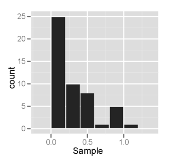{kind=link}
This is a sample of size 50 from a right-skewed distribution, plotted as a histogram. Notice that the histogram is not bell-shaped, indicating that the distribution is not normal.
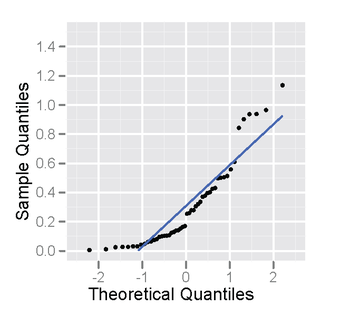{kind=link}
This is a sample of size 50 from a right-skewed distribution, plotted as a normal probability plot. Notice that the points deviate on the, indicating the distribution is not normal.
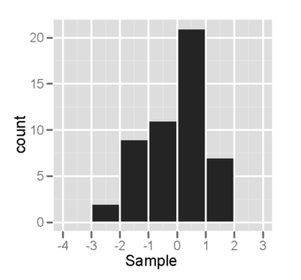{kind=link}
This is a sample of size 50 from a normal distribution, plotted out as a histogram. The histogram looks somewhat bell-shaped, indicating normality.
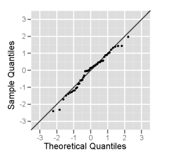{kind=link}
This is a sample of size 50 from a normal distribution, plotted as a normal probability plot. The plot looks fairly straight, indicating normality.
10.5.3. Conclusion
Many distributions in real life can be approximated using normal distribution.
Learning Objective
Explain how a probability histogram is used to normality of data
Key Points
- In a probability histogram, the height of each bar shows the true probability of each outcome if there were a very large number of trials (not the actual relative frequencies determined by actually conducting an experiment).
- The most obvious way to tell if a distribution is approximately normal is to look at the histogram itself. If the graph is approximately bell-shaped and symmetric about the mean, you can usually assume normality.
- The normal probability plot is a graphical technique for normality testing. The data are plotted against a theoretical normal distribution in such a way that the points form an approximate straight line.
- Many things in real life are approximately normally distributed, including people's heights and blood pressure.
Key Term
- normal probability plot
- a graphical technique used to assess whether or not a data set is approximately normally distributed
What is a Probability Histogram?
It is often useful to display the data collected in an experiment in the form of a histogram. Having a graphical representation is helpful because it allows the researcher to visualize what shape the distribution takes.
Probability histograms are similar to relative frequency histograms in that the Y-axis is labeled with probabilities, but there are some differences to be noted. In a probability histogram, the height of each bar shows the true probability of each outcome if there were to be a very large number of trials (not the actual relative frequencies determined by actually conducting an experiment). Because the heights are all probabilities, they must add up to one. Think of these probability histograms as idealized pictures of the results of an experiment. Simply looking at probability histograms makes it easy to see what kind of distribution the data follow .
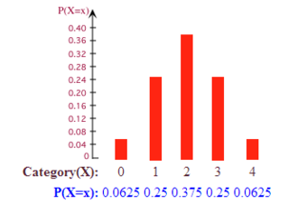{kind=link}
This probability histogram shows the probabilities that 0, 1, 2, 3, or 4 heads will show up on four tosses of a fair coin.
How Can We Tell If the Data is Approximately Normal?
The above example of a probability histogram is an example of one that is normal. How can we tell? The most obvious way is to look at the histogram itself. If the graph is approximately bell-shaped and symmetric about the mean, you can usually assume normality.
There is another method, however, than can help: a normal probability plot. A normal probability plot is a graphical technique for normality testing--assessing whether or not a data set is approximately normally distributed. The data are plotted against a theoretical normal distribution in such a way that the points form an approximate straight line . Departures from this straight line indicate departures from normality. It is important to remember not to overreact to minor wiggles in the plot. These plots are not often produced by hand, but rather by technological tools such as a graphing calculator.
{kind=link}
The data points do not deviate far from the straight line, so we can assume the distribution is approximately normal.
Approximately Normal Distributions in Real Life
We study the normal distribution extensively because many things in real life closely approximate the normal distribution, including:
- The heights of people
- The sizes of things produced by machines
- Errors in measurements
- Blood pressure
- Scores on a standardized test